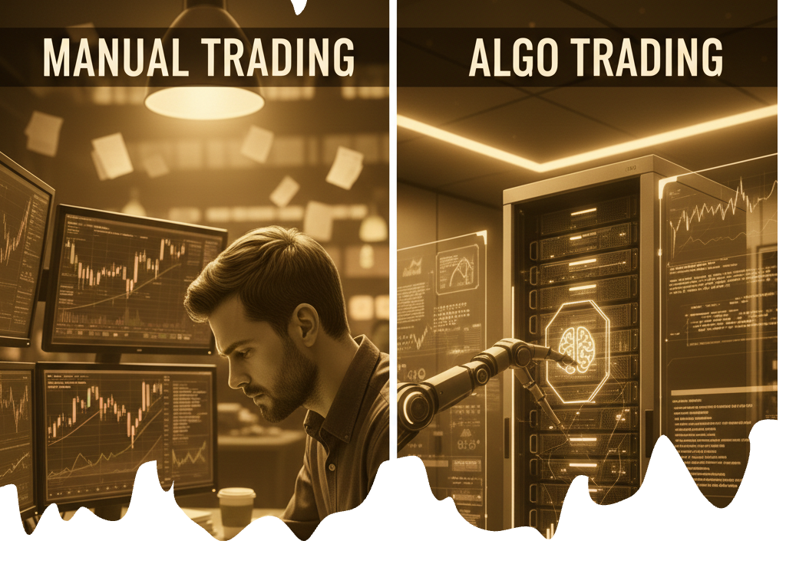
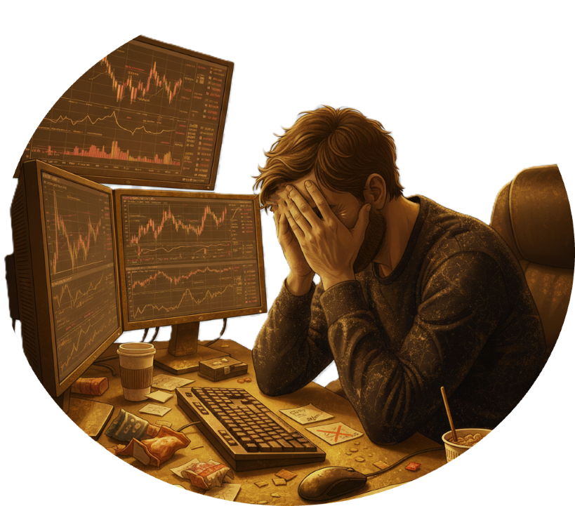

حول أكاديمية التداول الآلي
أكاديمية التداول الآلي هي جهة تدريبية متخصصة في تعليم التداول الآلي للأفراد والمؤسسات، وتهدف إلى نقل المعرفة العملية في مجال أنظمة التداول الذكي بأسلوب تدريجي ومنهجي. تقدم الأكاديمية مجموعة من الدورات التدريبية المصممة على عدة مستويات، تبدأ من المستوى التأسيسي للمبتدئين، وتصل إلى المستويات المتقدمة التي تركز على بناء وتطوير استراتيجيات التداول الآلي، وتحسين الأداء، وإدارة المخاطر باحترافية.
لماذا التداول الآلي؟
أصبح التداول الآلي خيارًا أساسيًا للمتداولين الذين يسعون إلى تحقيق نتائج أكثر استقرارًا وانضباطًا في الأسواق المالية، خاصة مع التقلبات السريعة وصعوبة الاعتماد على التداول اليدوي وحده. التداول اليدوي غالبًا ما يتأثر بالعواطف، التردد، والخوف من الخسارة، مما يؤدي إلى قرارات غير مدروسة وخسائر متكررة. في المقابل، يعتمد التداول الآلي على أنظمة واستراتيجيات محددة مسبقًا تُنفَّذ بدقة دون تأثر بالمشاعر أو الضغط النفسي.
أهم أسباب التحول إلى التداول الآلي:
- الانضباط الكامل في تنفيذ الاستراتيجيات
- السرعة والدقة في اتخاذ القرار
- التداول على مدار الساعة
- إدارة مخاطر أفضل
- تقليل الأخطاء البشرية
ماذا سيتعلم المشارك في عالم التداول الآلي؟
سيتعلم المشارك كيفية تحويل حركة السوق من سلوك بصري إلى نموذج عددي قابل للبرمجة، وبناء أنظمة تداول آلي تعتمد على قواعد واضحة وقابلة للقياس بدل القرار العاطفي. يشمل ذلك:
- - فهم المؤشرات من منظور كمي
- - تصميم استراتيجيات دخول وخروج محددة
- - اختبار الاستراتيجيات وتقييم ادائها
- - أتمتة إرسال الإشارات
- - أتمتة تنفيذ الأوامر
- - تنفيذ الأوامر عبر الأنظمة البرمجية وواجهات الربط (APIs)
- - إدارة المخاطر داخل
- - مراقبة وتحليل الأداء
- - الانضباط في اتخاذ القرار داخل الأسواق المالية.
رؤيتنا
نطمح إلى بناء مجتمع متخصص من بناة أنظمة التداول الآلي، يمتلك القدرة على تصميم وتطوير وتشغيل حلول تداول كمية قادرة على المنافسة الفعلية داخل الأسواق المالية المحلية والعالمية. رؤيتنا تقوم على تحويل المعرفة الفردية إلى منظومة جماعية من الكفاءات التي تتقن التفكير العددي، البرمجة المنهجية، وإدارة المخاطر وفق معايير احترافية.
ماهي الدورات الموجهة للأفراد والمؤسسات؟
للأفراد: تركز الدورة على بناء مهارات شخصية في التداول الآلي، من فهم المؤشرات وتحليل البيانات إلى تصميم استراتيجيات قابلة للتنفيذ بشكل مستقل. يحصل المشاركون على مشروع نهائي عملي يمكن استخدامه للتداول الشخصي أو تطويره لاحقًا.
للمؤسسات: نقدم نسخة مخصصة للفرق والشركات، مع التركيز على تطبيق أنظمة التداول الآلي داخل بيئة مؤسسية، بما يشمل إدارة المحافظ الجماعية، الربط مع منصات متعددة، مراقبة الأداء على نطاق واسع، وتدريب الفرق على تصميم استراتيجيات قابلة للاختبار والمراجعة المستمرة وفق معايير إدارة المخاطر والحوكمة.
التداول اليدوي مقابل التداول الآلي
يعمل المتداول العادي وفق القدرة البشرية المحدودة، حيث يمكنه متابعة 2-3 مؤشرات فقط في الوقت نفسه، ويتطلب التحليل واتخاذ القرار عدة ثوانٍ إلى دقائق لكل فرصة تداول. هذا التأخير يسبب فقدان فرص الدخول والخروج المثالية، كما أن التداول اليدوي لا يمكنه العمل أكثر من 8-10 ساعات يوميًا، ويتأثر بالأرهاق والتشتت، مما يزيد من احتمالية اتخاذ قرارات خاطئة. وفقًا لإحصاءات السوق، يقضي المتداول الفردي أكثر من 60% من الوقت في تحليل البيانات بدلًا من اتخاذ القرارات الدقيقة.
في المقابل، يمكن للمتداول الآلي معالجة أكثر من 20 مؤشرًا ومتغيرًا في نفس الوقت، وتنفيذ الأوامر خلال جزء من الثانية، والعمل 24 ساعة يوميًا و7 أيام في الأسبوع بدون أي تراجع في الأداء. تعدد المؤشرات يتيح تحققًا متقاطعًا للإشارات (Signal Confirmation)، مما يقلل من الإشارات الكاذبة بنسبة قد تصل إلى 70% مقارنة بالتداول اليدوي، وفقًا لنتائج Backtesting لأنظمة Quantitative Trading.

الفارق الجوهري هو أن التداول الآلي يعتمد على سرعة النظام ودقة البرمجة، وليس على القدرات البشرية، مما يمنحه أفضلية واضحة في الأسواق سريعة الحركة والعالية التنافسية.
ماهي الأساسيات التي يتعلمها المتدرب:
أساسيات التداول الآلي والمنهج العددي: فهم كيفية تحويل حركة السوق إلى بيانات رقمية قابلة للتحليل، واستيعاب المنطق العددي وراء الاستراتيجيات الآلية.
تصميم وبناء الاستراتيجيات المؤتمتة: تعلم بناء استراتيجيات كمية باستخدام مؤشرات مثل RSI وWMA، ودمج عدة مؤشرات للتحقق من صحة الإشارات.
اختبار الاستراتيجيات وتحليل الأداء (Backtesting): اختبار استراتيجيات التداول على بيانات تاريخية للتحقق من كفاءتها، وتحليل النتائج لتطوير استراتيجيات أكثر فعالية.
إدارة الإشارات وتنفيذ الأوامر عبر API: ربط أنظمة التداول مع منصات مثل TradingView وBinance، وأتمتة تنفيذ الأوامر بطريقة دقيقة وسريعة.
التعمق في التداول الكمي والتحسين المستمر: تعلم كيفية تطوير استراتيجيات متقدمة، استخدام تحليل متعدد المؤشرات لزيادة دقة الإشارات، وإدارة المخاطر بشكل آلي لضمان استمرارية الأداء وتوافقه مع الأسواق سريعة الحركة.
" التداول الآلي,هو السرعة التي لا يوازيها بشر، الدقة التي تتخطى العاطفة، والقدرة على العمل 24/7 ,لاقتناص فرص السوق الحقيقية."
دوراتنا
دورة المتداول الآلي للأفراد
برنامج تدريبي مخصص للأفراد الراغبين في تعلم التداول الآلي بشكل عملي ومنهجي، بدءًا من الأساسيات وحتى بناء أنظمة تداول قابلة للتنفيذ في الأسواق المالية.
تركز الدورة على:
- فهم مبادئ التداول الآلي والخوارزمي
- الانتقال من التداول اليدوي إلى التداول القائم على الأنظمة
- بناء استراتيجيات تداول آلي خطوة بخطوة
- تقليل تأثير العواطف والأخطاء البشرية
- تطبيق عملي باستخدام أدوات حقيقية
هذه الدورة مناسبة للمبتدئين في التداول، وكذلك للمتداولين الذين يمتلكون خبرة سابقة ويرغبون في تطوير أدائهم بأسلوب أكثر انضباطًا واحترافية.
دورات المؤسسات المالية والبنوك
برامج تدريبية متقدمة مصممة خصيصًا لتلبية احتياجات المؤسسات المالية، شركات الاستثمار، والبنوك الراغبة في بناء قدرات داخلية في مجال التداول الآلي وإدارة الأنظمة الذكية.
تشمل هذه الدورات:
تصميم وتطوير أنظمة تداول آلي مؤسسية
تحسين كفاءة فرق التداول وإدارة المخاطر
أتمتة استراتيجيات التداول والالتزام بالسياسات الداخلية
تحليل الأداء والحوكمة التقنية للأنظمة
تخصيص المحتوى وفق أهداف المؤسسة ومتطلبات الامتثال
يتم تقديم هذه البرامج بصيغة تدريب مخصص (Custom Training) وفق احتياجات كل مؤسسة، سواء حضوريًا أو عن بُعد.

%
نسبة المتداولين الذين يخسرون في التداول اليدوي
%
تقليل الأخطاء البشرية باستخدام التداول الآلي
%
التزام الأنظمة الآلية بتنفيذ الاستراتيجيات
الأسئلة المتكررة (FAQ)
يسعدنا استقبال أي استفسارات أو أسئلة لديكم حول أعمالنا أو فرص التعاون معنا. لا تترددوا في التواصل معنا.